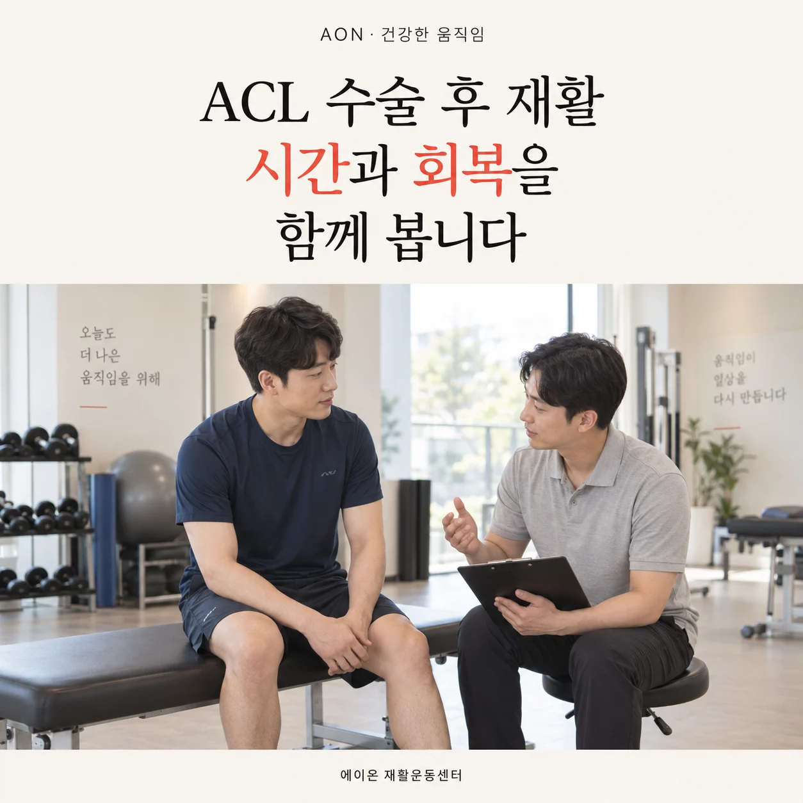
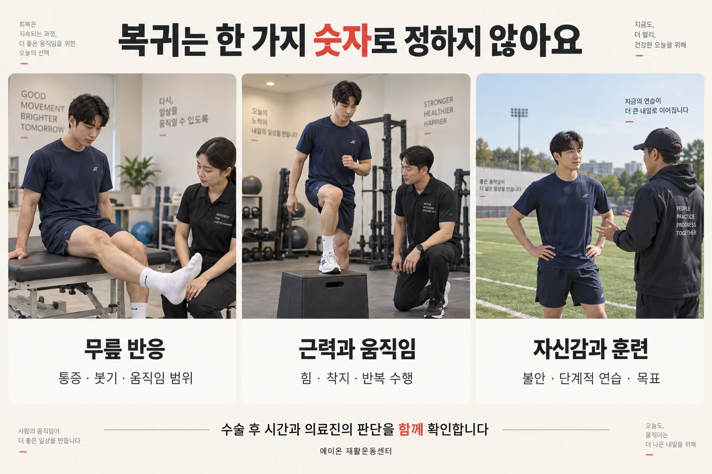

ACL 재건술 후 재활, 시간과 회복을 함께 봅니다
계단을 편하게 내려가기부터 다시 달리고 운동하기까지. “수술 후 몇 개월인가요?”와 함께 “지금 무엇이 준비됐나요?”를 살펴봅니다.
무릎 · 수술 후 재활 · 처음 게시
내용·근거 보완

이 글에서 살펴볼 내용
달력은 필요합니다. 다만 달력만으로는 부족합니다.
수술한 지 몇 달이 지났는데도 계단을 내려갈 때 조심스럽고, 가볍게 뛰어도 되는지 망설여질 수 있습니다. 이런 때 필요한 질문은 “지금 몇 개월째인가요?” 하나만이 아닙니다. “내가 돌아가려는 활동은 무엇이고, 그 활동을 위해 아직 회복해야 할 것은 무엇인가요?”를 함께 물어야 합니다.
전방십자인대, 즉 ACL은 무릎 안에서 정강뼈가 앞으로 과도하게 밀리거나 무릎이 비틀리는 움직임을 제어하는 데 기여합니다. 재건술은 손상된 인대를 대신할 조직을 연결하는 수술입니다. 새로 연결한 조직인 ‘이식건’에는 치유와 적응의 시간이 필요합니다. 통증이 줄었다고 이 과정까지 끝난 것은 아닙니다.[3][4]
반대로 시간만 충분히 보내도 근력과 움직임이 저절로 회복되는 것은 아닙니다. 그래서 기준 기반 재활은 조직을 보호해야 하는 시간과 현재 무릎의 상태를 함께 살펴, 다음 과제를 정하는 방식입니다. “날짜를 무시한다”가 아니라 “날짜만 보고 자동으로 넘어가지 않는다”에 가깝습니다.[1][4]
초기에는 붓기, 무릎 펴기, 허벅지 힘부터 살펴봅니다
운동 이름을 많이 아는 것보다, 지금 회복을 막는 부분을 구체적으로 찾는 것이 먼저입니다. 초기 평가에서는 무릎이 얼마나 붓는지, 편하게 펴고 굽힐 수 있는지, 허벅지 앞쪽 근육에 힘이 들어오는지, 허용된 범위에서 체중을 싣고 걸을 수 있는지를 확인합니다.[3][4]
여기서 관절 삼출은 관절 안에 액체가 평소보다 많이 차는 상태입니다. 겉에서 보이는 붓기와 완전히 같은 말은 아니며, 검사로 함께 살핍니다. 부종과 통증 등이 있을 때 허벅지 근육에 충분히 힘을 주기 어려운 현상이 동반될 수 있습니다. 관절 손상이나 수술 후 신경계의 억제로 근육을 충분히 활성화하기 어려운 현상을 관절성 근억제, AMI라고 부릅니다. 이것이 곧 말초신경이 손상됐다는 뜻은 아닙니다. 단순히 의지가 약해서 힘을 못 쓰는 것으로 몰아가서는 안 됩니다.[10]
그렇다고 붓기만 빠지면 근력이 모두 회복되는 것도 아닙니다. 오래 덜 쓰면서 생긴 근육량 감소, 통증, 움직임에 대한 경계심 등도 고려해야 합니다. 재활에서는 관절의 반응과 근육의 실제 기능을 반복해서 확인합니다. 잘 펴지지 않는 무릎을 혼자 강하게 누르거나, 허벅지 굵기만으로 회복을 판단하지 마세요.[3][4]
같은 ACL 수술이어도 같은 운동표를 쓰지 않습니다
어떤 조직으로 인대를 재건했는지, 함께 손상된 조직이 있는지에 따라 보호할 부분이 다릅니다. 특히 무릎 사이에서 충격을 분산하는 반월상연골을 함께 봉합했다면, 체중을 얼마나 실어도 되는지와 어느 정도까지 무릎을 굽혀도 되는지에 제한이 있을 수 있습니다.[5]
2025년에 발표된 유럽·미국 학회 공동 합의문도 반월상연골 파열 형태와 수술 방법 등에 따라 재활을 구분합니다. 모든 봉합 수술에 똑같은 제한을 적용하거나, 인터넷의 ACL 운동 일정표를 그대로 따라가는 것은 적절하지 않습니다. 수술기록과 담당 의료진의 안내가 먼저입니다.[5]
따라서 다음 상담에는 “ACL 수술을 했어요”에 더해 수술 날짜, 이식건 종류, 동반 수술, 체중부하·굽힘 제한, 현재 허용된 활동을 확인해 가져가면 도움이 됩니다. 모르는 항목은 추측하지 말고 수술한 병원에 확인하면 됩니다.
근력을 키우는 운동과 움직임을 연습하는 운동이 모두 필요합니다
허벅지 근력을 회복하는 일과, 그 힘을 걷기·계단·착지에서 사용하는 일은 연결되어 있지만 똑같지는 않습니다. 2023년 Aspetar 지침은 근력 훈련과 움직임 조절 훈련을 함께 다룹니다.[1]
“발을 바닥에 붙이는 운동만 안전하다”거나 “앉아서 무릎을 펴는 운동은 무조건 금지”라고 나누지는 않습니다. 발이 고정된 스쿼트류와 발이 자유로운 무릎 펴기 운동은 각기 쓰임이 있습니다. 다만 시작 시기, 움직임 범위, 저항과 무릎 앞쪽 통증을 고려해 조절해야 합니다. 운동 이름만 보고 스스로 무게를 올리라는 뜻은 아닙니다.[1][3]
또 걷기가 편해졌다는 이유만으로 근력 훈련을 끝내지 않습니다. “계단 한 번 내려가기”, “여러 층 반복해서 내려가기”, “달리다 멈추기”는 서로 다른 요구입니다. 다음 목표가 무엇인지에 맞추어 힘, 반복 수행과 움직임의 질을 확인해야 합니다.[2][3]
걷기, 달리기, 경기 복귀는 서로 다른 단계입니다
스포츠 복귀에 관한 Panther 합의문은 복귀를 한 번의 합격·불합격보다 일부 참여 → 종목 복귀 → 원하는 수행 수준 회복으로 이어지는 과정으로 설명합니다. 가볍게 달릴 수 있다는 사실이 곧바로 축구·농구의 방향 전환이나 상대와 부딪히는 상황까지 준비됐다는 뜻은 아닙니다.[2]
- 일상으로 돌아가기: 허용된 체중부하 안에서 보행, 계단 등 생활 목표와 무릎의 반응을 확인합니다.
- 달리기를 시작하기: 통증·붓기, 무릎 움직임, 근력과 반복 부하를 감당할 준비를 평가합니다.
- 종목 훈련으로 넓히기: 속도, 급정지, 점프·착지, 방향 전환 등 실제 운동의 요구를 단계적으로 더합니다.
- 경기와 수행으로 연결하기: 훈련을 견디는 정도, 자신감, 종목·역할과 의료진의 판단을 함께 확인합니다.
위 순서는 이해를 돕기 위한 설명이지, 집에서 통과 여부를 결정하는 검사표가 아닙니다. 필요한 과제와 순서는 개인마다 달라집니다.[2][3]

조금 더 알아보기 · 달리기 시작 기준은 얼마나 확실한가요?
Aspetar 지침은 무릎 펴짐, 굽힘 회복, 관절 내 붓기, 허벅지 앞쪽 근육(대퇴사두근)의 힘, 통증 없는 반복 동작 등을 달리기 시작 때 고려할 항목으로 제안합니다. 그러나 이 기준들은 연구가 부족한 부분을 전문가 판단으로 보완한 것이며, 모든 사람의 안전을 보증하는 검증된 합격선은 아닙니다. 이 글에서 특정 숫자를 자가 허가증처럼 제시하지 않는 이유입니다.[1]
‘반대쪽의 90%’와 ‘수술 후 9개월’을 어떻게 읽어야 할까요?
좌우 대칭지수, LSI는 수술한 다리의 검사 결과를 반대쪽 결과와 비교한 비율입니다. 예를 들어 같은 검사에서 반대쪽이 100, 수술한 쪽이 90이라면 90%입니다. 회복을 살펴보는 참고값이지만, 반대쪽도 약해져 있다면 양쪽이 비슷하다는 이유로 회복을 좋게 볼 수 있습니다.[6]
2017년 Wellsandt 등의 연구는 이러한 한계를 보여줬습니다. 2025년 Simonsson 등의 등록자료 연구에서도 젊고 활동적인 선수 233명의 근력과 한 발 뛰기(홉) 검사의 LSI만으로 복귀 후 2년 내 두 번째 ACL 손상 여부를 잘 구분하지 못했습니다. 검사가 쓸모없다는 뜻이 아니라, 그 숫자 하나로 안전을 확정할 수 없다는 뜻입니다. 실제 힘의 크기, 이전 기록, 동작과 훈련 반응을 같이 봐야 합니다.[6][7]
‘9개월 전 복귀는 위험하다’는 연구의 뜻
Beischer 등의 2020년 전향적 코호트 연구는 15–30세 선수 159명을 분석했습니다. 무릎 부담이 큰 스포츠에 수술 후 9개월 전에 복귀한 경우, 더 늦게 복귀한 경우보다 두 번째 ACL 손상의 위험비가 높았습니다(HR 6.7, 95% 신뢰구간 2.6–16.7). 이는 일반인의 걷기나 재활 중 가벼운 달리기를 비교한 연구가 아닙니다.[8]
관찰연구이므로 날짜만이 원인이라고 확정할 수 없고, 최초 표본 중 일부만 분석되어 선택 편향 가능성도 있습니다. 무엇보다 9개월이 지나면 자동으로 안전해진다는 의미가 아닙니다. 시간을 확보하는 일과 회복 상태를 확인하는 일은 서로를 대신하지 않습니다.[8]
다시 다칠까 봐 겁나는 마음도 확인할 정보입니다
검사에서 힘이 좋아졌어도 착지나 방향 전환이 무서울 수 있습니다. 그 불안을 “마음이 약하다”는 말로 끝내지 않습니다. 어떤 동작이 두려운지, 통증이나 불안정감이 함께 있는지, 이전에 연습해 본 상황인지부터 구체적으로 확인합니다. 심리적 준비는 복귀 논의의 한 부분이지, 신체검사를 대체하는 항목은 아닙니다.[2]
예를 들어 예상 가능한 속도·방향에서의 연습과 상대의 움직임에 즉시 반응해야 하는 경기는 요구가 다릅니다. 담당자와 함께 현재 가능한 과제와 다음에 연습할 과제를 나누면, 막연한 “운동 복귀”를 구체적인 목표로 바꿀 수 있습니다. 자신감이 높아졌다는 이유만으로 보호 기간이나 기능 확인을 건너뛰지는 않습니다.[2][3]
다음 상담에서는 이 다섯 가지를 물어보세요
논문의 기준을 내 재활에 연결하려면, 숫자를 외우기보다 현재 상태 → 다음 과제 → 다시 확인할 시점을 분명히 하는 편이 도움이 됩니다. 아래는 여러 자료를 바탕으로 정리한 상담 질문이며, 연구에서 검증한 채점도구는 아닙니다.
- 지금 꼭 지켜야 할 제한은 무엇인가요? 동반 수술과 조직 보호 조건을 확인합니다.
- 내 무릎에서 아직 부족한 항목은 무엇인가요? 붓기, 움직임 범위, 근력, 생활 기능 중 우선순위를 묻습니다.
- 이번 단계의 목표는 무엇인가요? ‘운동을 더 하기’보다 계단·달리기 등 구체적인 과제를 정합니다.
- 어떤 반응이면 운동량을 조절해야 하나요? 운동 중뿐 아니라 그날 저녁과 다음 날의 변화까지 전달합니다.
- 언제, 무엇을 다시 측정하나요? 같은 조건의 기록을 비교해 다음 계획을 정합니다.
운동 후 붓기나 절뚝거림이 늘고, 평소 되던 동작이 다음 날 더 어려워졌다면 최근 늘린 활동을 알리고 계획을 검토하세요. 이것은 모든 사람에게 적용되는 ‘24시간 합격 기준’이 아니라 반응을 공유하는 방법입니다. 경기 복귀 후에도 근력·움직임 훈련과 재손상 예방을 이어가는 것이 재활 계획의 일부입니다.[3]
이런 변화는 운동보다 진료가 먼저입니다
수술 후 열이 나거나 상처에서 진물이 나고, 붓기·붉어짐·통증이 점점 심해지거나, 종아리에 새로운 통증과 붓기가 나타난다면 수술한 병원이나 의료기관에 신속히 연락하세요. 감염이나 혈전 같은 문제를 확인해야 할 수 있습니다.[9]
갑작스러운 숨참이나 가슴 통증이 동반되면 운동을 중단하고 119 또는 응급실을 통해 즉시 평가받으세요. 새로 접질린 뒤 무릎이 크게 붓거나 반복해서 꺾이는 느낌이 생긴 경우도 예정된 운동을 그대로 이어가기보다 의료진에게 확인받아야 합니다.[9]
모든 불편이 재손상을 뜻하지는 않습니다. 다만 ‘재활 중이니까 원래 아픈 것’으로 단정하지 않고, 평소와 다른 변화인지 구분하는 것이 중요합니다.
근거와 더 읽을거리
지침·합의문·관찰연구·공식 환자 안내를 구분했습니다. 근거 확인: 2026.10.15. 원문 전체를 번역한 자료가 아니라 일반 독자를 위한 독립적인 설명입니다.
- Kotsifaki R, et al. Aspetar clinical practice guideline on rehabilitation after anterior cruciate ligament reconstruction. Br J Sports Med. 2023;57:500–514.
임상진료지침. 운동·진행 원칙의 근거이며, 달리기와 스포츠 복귀 기준 중 전문가 제안을 보편적 안전선과 구분했습니다.
- Meredith SJ, et al. Return to Sport After Anterior Cruciate Ligament Injury: Panther Symposium ACL Injury Return to Sport Consensus Group. Orthop J Sports Med. 2020;8(6).
전문가 합의문. 참여·종목 복귀·수행 회복의 구분과 신체·심리·환경을 함께 보는 틀입니다.
- Brinlee AW, et al. ACL Reconstruction Rehabilitation: Clinical Data, Biologic Healing, and Criterion-Based Milestones to Inform a Return-to-Sport Guideline. Sports Health. 2022;14(5):770–779.
임상 고찰과 단일 기관 관찰자료. 회복 평가·훈련 진행을 참고했으며, 제시된 주차를 개인별 마감일로 적용하지 않았습니다. DOI: 10.1177/19417381211056873.
- Adams D, et al. Current concepts for anterior cruciate ligament reconstruction: a criterion-based rehabilitation progression. JOSPT. 2012;42(7):601–614.
기존 글의 출발 문헌. 초기 평가와 기준 기반 진행의 개념을 보존하고, 일정과 복귀 해석은 후속 자료와 함께 보완했습니다. DOI: 10.2519/jospt.2012.3871.
- Pujol N, et al. The Formal EU-US Meniscus Rehabilitation 2024 Consensus: An ESSKA-AOSSM-AASPT Initiative: Part I—Rehabilitation Management After Meniscus Surgery (Meniscectomy, Repair and Reconstruction). Orthop J Sports Med. 2025.
학회 공동 합의문. 반월상연골 수술 종류에 따른 보호 조건의 차이를 참고했습니다. 다수 권고는 제한된 근거와 전문가 합의에 기반합니다.
- Wellsandt E, Failla MJ, Snyder-Mackler L. Limb Symmetry Indexes Can Overestimate Knee Function After Anterior Cruciate Ligament Injury. JOSPT. 2017;47(5):334–338.
70명 코호트. 반대쪽 다리를 정상 기준으로 삼을 때의 한계를 설명하는 근거입니다. DOI: 10.2519/jospt.2017.7285.
- Simonsson R, et al. Questioning the rules of engagement: a critical analysis of the use of limb symmetry index for safe return to sport after anterior cruciate ligament reconstruction. Br J Sports Med. 2025;59:376–384.
233명 등록자료 연구. LSI 단독의 재손상 구분 능력에 한계가 있었으며, 근력 훈련이나 기능검사 자체가 무의미하다는 결론은 아닙니다. DOI: 10.1136/bjsports-2024-108079.
- Beischer S, et al. Young Athletes Who Return to Sport Before 9 Months After Anterior Cruciate Ligament Reconstruction Have a Rate of New Injury 7 Times That of Those Who Delay Return. JOSPT. 2020;50(2):83–90.
15–30세 선수 159명 전향적 코호트. 무릎 부담이 큰 스포츠 복귀와 두 번째 ACL 손상의 연관성입니다. 일반인의 걷기 기준이나 9개월 안전 보증으로 해석하지 않았습니다. DOI: 10.2519/jospt.2020.9071.
- NHS. Complications of ACL (anterior cruciate ligament) surgery. Reviewed 17 July 2025.
공공 의료기관의 환자용 안내. 감염·혈전 의심 신호와 응급 대응을 확인했으며, 긴급 연락은 한국 기준인 119로 안내했습니다.
- Sonnery-Cottet B, et al. Arthrogenic muscle inhibition after ACL reconstruction: a scoping review of the efficacy of interventions. Br J Sports Med. 2019;53(5):289–298.
AMI와 대퇴사두근 활성 저하를 설명하는 범위 문헌고찰. 근육량 감소와 신경계의 억제를 같은 현상으로 취급하지 않았습니다. DOI: 10.1136/bjsports-2017-098401.
에이온 재활운동센터의 일반 건강정보입니다. 개인의 진단·수술 후 처방·스포츠 복귀 허가를 대신하지 않습니다. 연령, 수술 방법, 동반 손상, 이전 활동과 현재 상태에 따라 진행이 달라집니다. 담당 의료진의 제한사항과 개별 평가를 우선하세요.